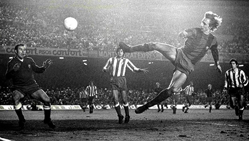
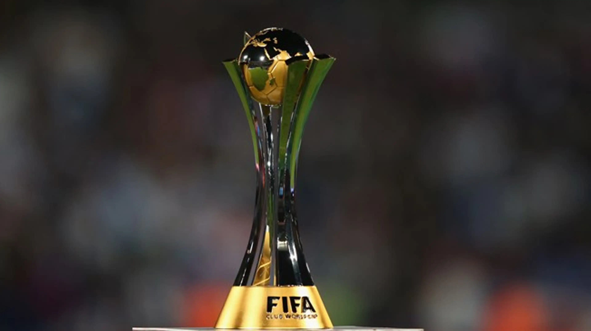

Historia
L'esport més conegut a nivell mundial porta més de 100 anys d'historia té molta historia al seu voltant, algunes coses interesants les comentem a continuació.
Fundació


El futbol és un esport molt antic i els seus orígens no són gaire clars. Els antecedents més remots del joc es poden situar al voltant de l'any 200 aC. durant la dinastia Han a la Xina. El seu joc es deia tsu chu (tsu significa aproximadament 'donar puntades de peu' i chu denota una bola feta de cuir farcit). Al segle xiv es disputava a Florència un joc anomenat calcio (giuoco del calcio, 'joc de la puntada de peu'), que es jugava per equips de 27 jugadors amb sis àrbitres. Aquest joc permetia usar tant les mans com els peus. No és fins al segle xii que es troben evidències d'algun tipus de futbol practicat a Anglaterra. A l'edat mitjana se'n van conèixer diversos tipus. Bàsicament era un futbol que tenia lloc entre faccions o grups rivals en viles i ciutats i també entre pobles i parròquies. Al segle xviii, era popular a les escoles públiques angleses, però encara comprenia molts jugadors per bàndol. L'any 1846 es va realitzar el primer intent seriós d'establir un reglament. Va ser promogut per H. de Winton i J. C. Thring a la Universitat de Cambridge, que van preparar un encontre entre representants de les escoles públiques més importants per intentar crear un joc de regles estandarditzat. Van arribar a un acord i en van formular deu, conegudes com 'les regles de Cambridge'.
El Primer Equip
El Sheffield Football Club és un club semiprofessional de futbol de la ciutat de Sheffield, al comtat de Yorkshire, Anglaterra. Va ser fundat el 1857 i juga a la Northern Premier League Division One South, torneig de la vuitena divisió en el sistema de lligues de futbol d'Anglaterra. La fama del Sheffield FC és la de ser el club de futbol més antic del món.
Competicions
El futbol te molts anys d'historia i durant aquests anys s'han anat creant moltes competicions del entre elles les més importants són les que estàn a continuació.
Competicions Nacionals
Les competicions nacionals són competicions dintre d'un mateix país només amb equips d'aquest, els campions i subcampions de cada competició d'un país juguen després una final four (Supercopa) per veure qui és el millor del país.
Lligues
Les lligues són competicions en les quals els millors equips d'un país competeixen entre ells per veure qui és el millor. Els partits són a anada i tornada, és a dir cada equip juga contra tots els altres 2 vegades per temporada una a casa i l'altre a casa l'adversari, els partits estàn separats per 2 voltes, en cada volta es juguen la meitat de partits.
LaLiga
La Primera divisió espanyola de futbol, més conguda com La Liga. Es celebra cada any des de 1929.
Premier League
La Primera divisió anglesa de futbol. Es celebra cada any des de 1992. Abans la primera divisió era la actual segona.
Bundesliga
La Primera divisió alemanya de futbol. Es celebra cada any des de 1963.
Serie A
La Primera divisió italiana de futbol. Es celebra cada any des de 1898.
Eredivisie
La Primera divisió holandesa de futbol. Es celebra cada any des de 1888.
Ligue 1
La Primera divisió francesa de futbol. Es celebra cada any des de 1932. També és coneguda com la Lliga de grangers, per ser la pitjor de les 5 grans lligues (LaLiga, Premier, Bundesliga, Serie A, Ligue 1).
Copes
Les copes són competicions on competeixen els equips profesionals i alguns semi-profesionals d'un país per veure qui és el millor. Els partits de copa solen ser eliminatories a partit únic tot i que hi ha algunes que són a anada i tornada com la semifinal.
Copa del Rey
És la copa d'Espanya i fou fundada el 1903.
English Football League Cup
És la copa anglesa i fou fundada el 1961.
DFB-Pokal

És la copa alemanya i fou fundada el 1934.
Coppa Italia
És la copa italiana i fou fundada el 1922.

KNVB Beker

És la copa holandesa i fou fundada el 1899.
Coupe de France de Football
És la copa francesa i fou fundada el 1917.
Supercopa
És la copa que es juga entre el guanyador de la lliga i copa d'un país i els subcampeons d'aquestes, (subcampió de copa vs campió de lliga) vs (subcampió de lliga vs campió de copa).
Competicions Internacionals
Les competicions internacionals són competicions en les que els millors equips dels millors paissos competeixen entre ells per veure qui és el millor, són entre paíssos d'un mateix continent, i els guanyadors dels 4 continents principals juguen després una final four (Mundial de Clubes) per veure qui és el millor del Món.
Champions
La Champions League (anteriorment coneguda com a Copa d'Europa de futbol) és la màxima competició oficial de clubs a Europa.s
Europa League
L'Europa League ,abans coneguda com a Copa de la UEFA, és com la segona divisió oficial de clubs a Europa.
Conference League
L'Europa League és com la tercera divisió del fútbol oficial de clubs a Europa.
Supercopa d'Europa
La Supercopa d'Europa de futbol és una competició que enfronta als campions de la Champions i de l'Europa League.
Copa Libertadores
És el torneig internacional de futbol més important a escala de clubs de futbol del continent sud-americà.
Mundial de Clubs
El Mundial de Clubs és una competició futbolística disputada pels equips campions de les competicions continentals (Champions, Copa Libertadores...).
Competicions De Seleccions
Són competicions on en comptes de participar-hi clubs hi participen seleccions (1 equip de cada país format pels millors jugadors del mateix) a més aquestes és juguen cada 4 anys intercalades cada 2 anys.
Mundial
És una competició mundial on participen totes (o casi totes) les seleccions per veure quina és la millor, és la màxima competició oficial a nivell de paíssos.
Eurocopa
És una competició on totes les seleccions de d'Europa juguen entre elles per veure quina és la millor.
Copa Amèrica

És una competició on totes les seleccions de d'Amèrica del Sud juguen entre elles per veure quina és la millor.
La Finalissima
És un partit disputat entre la selecció campiona de l'Eurocopa i la selecció campiona de la Copa Amèrica.
Skills
En el futbol hi ha moltes coses però la que més ens agrada a tots són les skills, les skills et poden ajudar a driblar jugadors de l'equip rival o a fer el joc més bonic (d'aqui l'expressió Joga Bonito), tot i que fer-ne moltes i sense sentit osigui fer-les per fer pot arribar a ser molest pels espectadors i sobre tot pels jugadors del equip contrari que podrien arribar a fer-te alguna entrada forta per lesionar-te i que paris, com li passava amb en Neymar i li passa ara a altres jugadors com en Vinicius...
El meu Top 8 millors Skills
Ruleta
Consisteix en fer girar la pilota al voltant d'un defensor utilitzant el peu com un eix, de manera que el jugador gira el cos per evadir al defensor i continua amb la possessió de la pilota.
Rainbow Flick
La "Rainbow flick" és un truc de futbol en què el jugador aconsegueix elevar la pilota per sobre d'un defensor utilitzant els seus peus d'una manera que la pilota sembla passar per sobre del jugador com un arc de Sant Martí, "Rainbow" en anglés.
Sombrero Flick
És un moviment en què un jugador aconsegueix superar un oponent aixecant la pilota per sobre d'aquest i d'ell mateix.
Elàstica i Elàstica Inversa
És un moviment en el que el jugador utilitza l'exterior peu per moure la pilota cap a fora i immediatament l'atreu cap a dins amb el interior en un moviment ràpid i fluid per sorprendre l'adversari, l'Inversa seria el contrari, moure la pilota cap a dintre i després cap a fora. Ho va popularitzar en Ronaldinho.
Cruyff Turn
Consisteix en fer veure que s'anirà a passar la pilota a un company o que es prendrà una direcció específica, però en lloc d'això, el jugador utilitza el peu de suport per fer una ràpida fintada, girant el cos i deixant la pilota amb el peu de darrera. Ho va popularitzar en Cruyff.
Stepovers o Bicicleta
Consisteix en moure ràpidament un peu al voltant de la pilota, simulant que està a punt de prendre una direcció determinada però sense fer-ho, el moviment es pot repetir varies vegades fins que finalment moguis la pilota cap a la direcció escollida.
Ronaldo Chop
Es sol utilitzar estàn en moviment, consisteix en utilitzar el peu contrari a la direcció que es vol agafar per realitzar un tall ràpid i fort cap a aquella direcció, canviant així la trajectòria de la pilota. Ho va popularitzar en Cristiano Ronaldo.
Neymar Rollover
Consisteix en arrosegar la pilota cap un direcció amb el peu contrari, després fer un Stepover amb l'altre peu i finalment colpejar la pilota suaument amb el peu inical per darrera l'altre peu . Ho va popularitzar en Neymar.